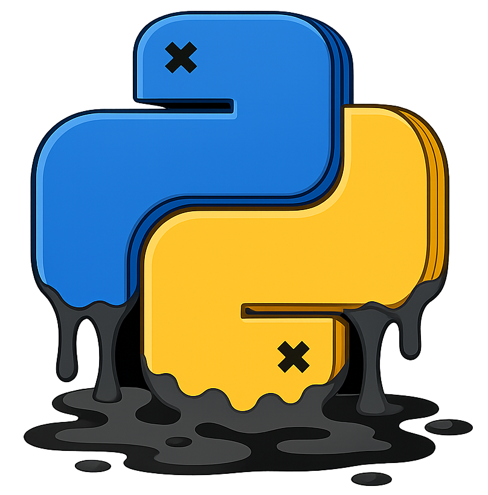
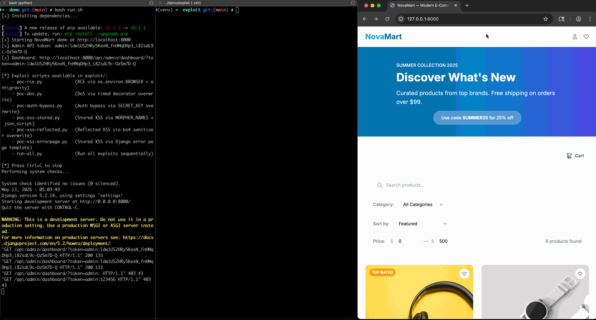
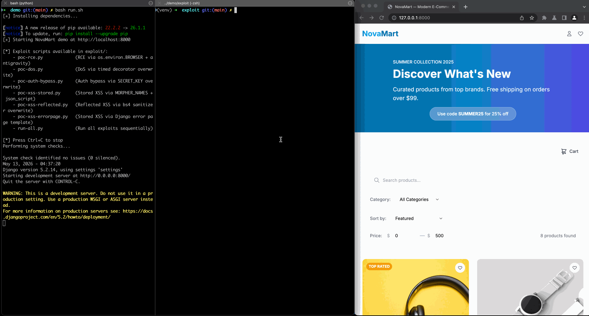

(All You Ever Wanted To Know About)
Python Class Pollution
What is Python class pollution?

Python class pollution is a vulnerability class where untrusted input allows attackers to modify unintended Python runtime objects.
It arises from two core Python language features: (i) a uniform object model, where every value is an object and objects expose references to their classes, metadata, and related runtime state through built-in attributes such as __class__, __base__, __dict__, and __globals__;
and (ii) flexible reflection mechanisms, such as dynamic getattr and setattr, which allow programs to access and modify attributes using runtime-determined names.
The combination of these two language features becomes dangerous when a program performs a sequence of reflective attribute or item lookups using attacker-controlled names. These lookups may cause the program to traverse from an ordinary object to unintended runtime objects through those built-in attributes, and then modify their content that later affect program behavior. These modifications violate runtime integrity and can lead to severe consequences, including remote code execution (RCE), authentication bypass, cross-site scripting (XSS), denial of service (DoS), and token leakage.
How does it work?
Consider a common recursive update function intended to set nested fields of an object based on user input:
def update(obj, data):
for key in data:
val = data[key]
if isinstance(val, dict):
update(getattr(obj, key), val)
else:
setattr(obj, key, val)
# Attacker payload:
update(user, {"__class__": {"__getattribute__": "1337"}})
If data is attacker-controlled, it can be crafted to access unintended objects by traversing Python’s built-in attributes. In the example above, the attacker uses the key __class__ to retrieve the class object of user via getattr, then sets its __getattribute__ method to a non-callable string. Since Python implicitly invokes __getattribute__ for all attribute accesses, this triggers a runtime exception on any access to User instances, resulting in a denial-of-service (DoS).
To further exploit class pollution toward severe consequences, e.g., RCE, XSS, authentication bypass, we need to consider (i) pollution primitives (how can attacker-controlled input resolve and modify objects), (ii) pollution targets (what are the valuable targets to pollute and how will they affect the Python runtime), and (iii) gadgets (how can polluted values lead to concrete impacts). See the full wiki for details.
Why does it matter?
Class pollution matters because it violates Python runtime integrity. Once unintended runtime objects are polluted, the modified values may flow into security-sensitive sinks and lead to serious consequences. As an example, we show how a zero-day class pollution vulnerability in django-unicorn (CVE-2025-24370) can be exploited to cause four types of impact:



For payloads and technical details, see the full django-unicorn showcase.
How to detect it?
To detect class pollution at scale, we built Pyrl (/pɜːrl/, “Pearl”), the first automated detection tool for Python class pollution. Pyrl introduces a novel static analysis called operational taint analysis, implemented on top of CodeQL, that precisely models the reflective attribute and item lookups used to traverse and modify objects, and tracks attacker-controlled inputs through them with a set of fine-grained, expressive semantic taint labels.
Pyrl detects all six variants in our taxonomy, performs exploitability checking, and uses barrier-node analysis to suppress false positives from key sanitization and type checks. Across over 671K Python packages, it has identified 47 confirmed zero-day class pollution vulnerabilities.
To run it on your own code, see the Pyrl documentation for installation and usage.
CVEs at a glance
A selective list of the confirmed class pollution vulnerabilities:
| Application | CVE | Impact |
|---|---|---|
| Azure CLI | CVE-2025-24049 | RCE, Token Leakage |
| Django Unicorn | CVE-2025-24370 | RCE, XSS, Auth Bypass, DoS |
| Taipy | CVE-2025-30374 | RCE, XSS, DoS |
| Mesop | CVE-2025-30358 | DoS |
| ComfyUI | CVE-2025-6107 | DoS |
| docarray | CVE-2025-5150 | DoS |
| sverchok | CVE-2025-3982 | Token Leakage |
History
Class pollution was first introduced in 2023 by Abdulraheem Khaled [1], who disclosed a real-world vulnerability in the pydash library. It was originally called “Prototype Pollution in Python” due to its similarity to JavaScript prototype pollution. The same work was also presented at Black Hat MEA 2023 as “Prototype Pollution-like Bug in Python”, which introduced class pollution to the broader security community alongside example gadgets.
Since then, only one additional CVE (CVE-2024-5452) was discovered before our study. In 2023, Ouyang [2] demonstrated the feasibility of class pollution attacks through a small, synthetic example. In 2024, Zhang [3] explored an possible exploitation technique targeting global variables pollution and discussed two possible defenses.
Our work (2026) [4] introduces a systematic taxonomy of class pollution (five of six variants are novel), an automated detection tool (Pyrl), and a large-scale measurement of class pollution vulnerabilities across the Python ecosystem, uncovering 47 zero-day vulnerabilities in widely used applications and packages.
Citation
This research was presented at IEEE S&P 2026 by Zhengyu Liu, Jiacheng Zhong, Jianjia Yu, Muxi Lyu, Zifeng Kang, and Yinzhi Cao. Please feel free to cite our paper!
@inproceedings{liu2026classpollution,
title={The First Large-Scale Systematic Study of Python Class Pollution Vulnerability},
author={Liu, Zhengyu and Zhong, Jiacheng and Yu, Jianjia and Lyu, Muxi and Kang, Zifeng and Cao, Yinzhi},
booktitle={2026 IEEE Symposium on Security and Privacy (SP)},
year={2026}
}Last updated: May 12, 2026.